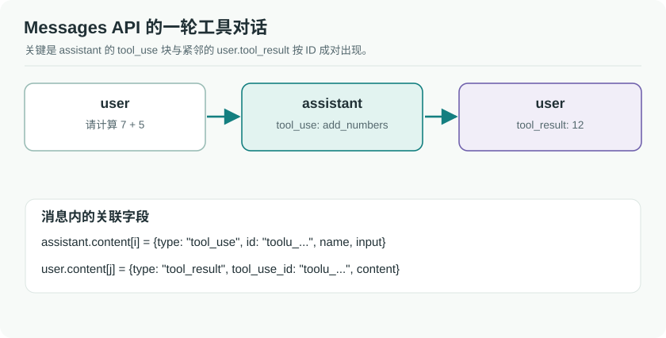
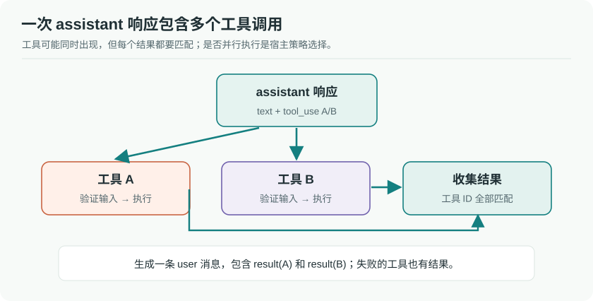

Tool Use 协议：从 JSON Schema 到工具结果
把模型调用、工具执行、并行调度和流式参数组装分开理解，严格核对 tool_use/tool_result 的字段、顺序、失败路径与安全边界。
工具调用首先是一份消息协议
模型并不直接执行 Python 函数或 Bash。对于应用侧客户端工具，模型生成描述行动意图的 tool_use 内容块；宿主程序检查参数并执行；随后把结果作为 tool_result 交还模型。把这个区别讲清楚，才能讨论权限、并行和流式输出。

用 JSON Schema 约束参数，而不是信任文本
每个客户端工具通常包含名称、描述和参数的 input_schema。这让模型知道怎样提出调用请求，但不能替代宿主侧的运行时校验。
{
"name": "add_numbers",
"description": "Add two bounded integers",
"input_schema": {
"type": "object",
"properties": {
"a": {"type": "integer"},
"b": {"type": "integer"}
},
"required": ["a", "b"],
"additionalProperties": false
}
}为什么加 additionalProperties: false？是为了避免无意接受多余的字段；但模型仍可能给出越界数值或不符合业务规则的值。宿主侧仍要检查权限、类型、大小、速率与作用域。工具描述帮助模型选择，而不是访问控制列表。
完整消息示例：请求 → 调用 → 结果
下面展示的是经过简化的客户端工具消息形状，省略了与机制无关的 API 元信息。tool_use_id 必须与对应调用的 id 一致：
// ① user message
{"role": "user", "content": "Add 7 and 5"}
// ② assistant response, stop_reason="tool_use"
{"role": "assistant", "content": [
{"type": "tool_use", "id": "toolu_demo_01",
"name": "add_numbers", "input": {"a": 7, "b": 5}}
]}
// ③ immediately following user message
{"role": "user", "content": [
{"type": "tool_result", "tool_use_id": "toolu_demo_01",
"content": "12", "is_error": false}
]}
// ④ next assistant response may contain a final text answer示意 ID 仅用于解释字段，实际请求应原样转发 API 返回的 ID。每个 assistant 工具调用块都必须有对应的结果，执行失败时应返回带 is_error 的结果而非丢弃。
多个 tool_use 与并行执行的真正含义
同一次 assistant 消息可以包含多个工具调用。多块调用只表明模型提出了多个请求；具体是顺序执行还是并发执行，由客户端工具的宿主调度和依赖关系决定。两个互不影响的只读查询适合并发；写入同一文件的两次操作则可能需要串行化或冲突处理。

不要把所有工具都无脑并行
若两个工具访问同一可变资源，调度器必须处理依赖、冲突、幂等性和失败回滚。仅在操作互相独立、可被批准且副作用可控时才考虑并发。
Streaming 时不要过早解析半个 JSON
启用 Streaming 后，tool_use 的内容可能随多个增量事件逐步出现。客户端要按协议跟踪消息与内容块边界，将参数片段累积为完整的工具输入，等结构完整且校验通过后再考虑执行。不能看到一个尚未结束的 JSON 字符串，就把它当作已被验证的参数。
// 教学用状态机，不是特定 SDK 的事件枚举
state = WAIT_FOR_BLOCK
on_tool_block_start: state = ACCUMULATING_INPUT
on_input_delta: append_to_buffer(delta)
on_tool_block_end:
parsed = parse_complete_json(buffer)
validated = validate_schema(parsed)
state = READY_FOR_POLICY_CHECK
after_approval: dispatch(validated)具体事件名称、增量格式和异常处理应以所使用 SDK 的官方 Streaming 文档为准。教学状态机强调完成后验证、验证后授权、授权后执行的顺序。
五种失败模式及正确应对
| 失败 | 错误做法 | 建议策略 |
|---|---|---|
| 工具名不存在 | 静默跳过 | 返回相应 ID 的错误结果 |
| 参数不符合 Schema | 尝试猜测补齐 | 返回明确校验错误或要求重试 |
| 执行超时 | 无限等待 | 取消任务、报告超时、记录是否可重试 |
| 副作用越权 | 仅凭模型决定执行 | 权限策略拒绝或请求人工确认 |
| 模型输出截断 | 把不完整内容当成功 | 识别停止原因并显式处理 |
一个可靠的 Harness 应能在这些场景下重建协议状态。失败反馈可以帮助模型理解现状，但不能将高风险操作权限交给模型自动扩大。
逐行核验可运行实现
阅读本仓库 mini_agent.py 的 run_agent()，重点核对四个不变量：原始 assistant 内容保留完整、一次 tool_use 对应一条含多个结果的 user 消息、未知工具必须返回错误、非正常停止不得当作完成。
python3 -m unittest discover -s examples -p 'test_*.py'这份离线测试通过模拟多工具响应验证消息顺序，并拒绝越界参数，不需要真实 API。若将加法工具改为文件写入工具，必须新增工作区边界、审批和可恢复操作测试。
tool_use，其中第二个工具不存在。检查返回的 user.content 仍包含两条结果、后一条 is_error=true，下一轮能够继续执行而不是产生协议缺口。参考资料与证据边界
- Claude Platform: tool use overview — 客户端工具与服务端工具的范围
- Claude Platform: how tool use works — tool_use / tool_result 的核心消息结构
- Claude Platform: handle tool calls — 并发工具、错误结果和协议约束
- Claude Platform: streaming messages — 流式事件及增量内容块处理
文中的架构分层、控制流与图示是针对公开能力的教学设计；未公开的 Claude Code 内部实现细节不由这些示意图推定。